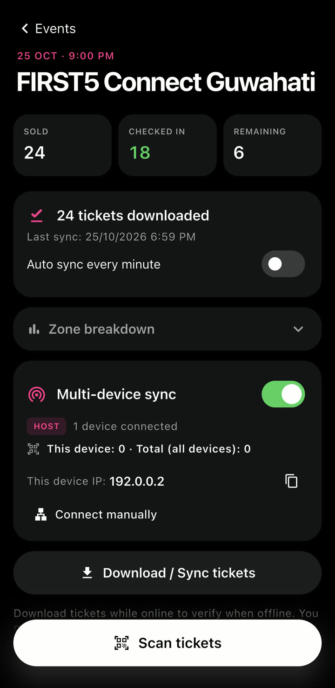
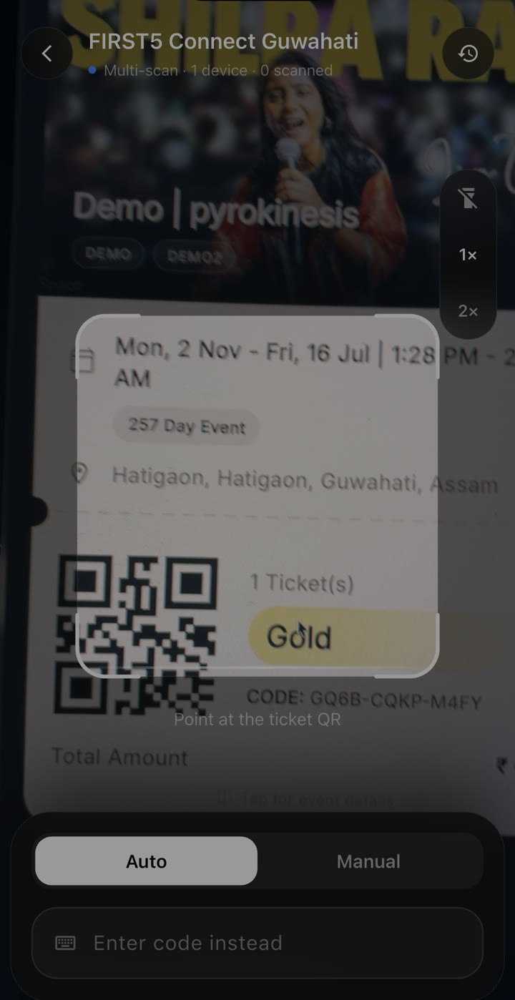
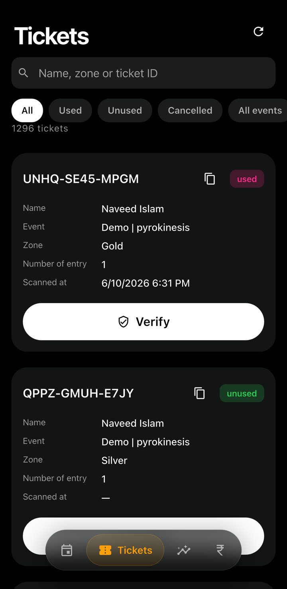
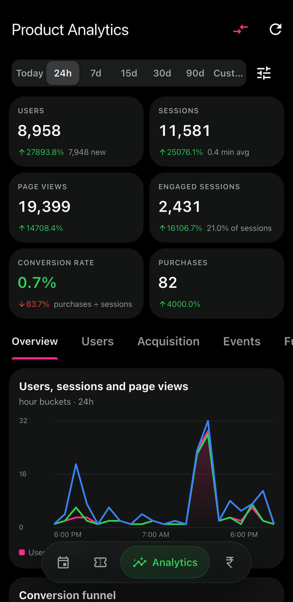
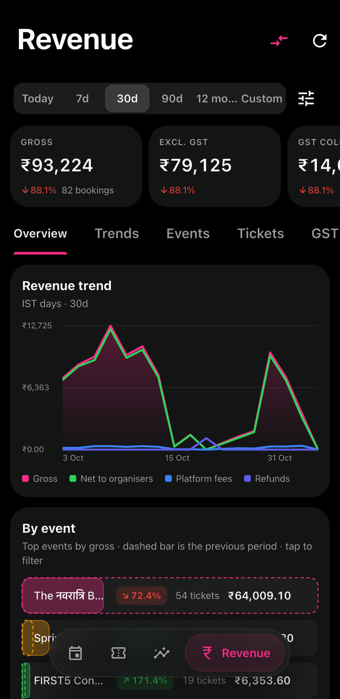

Case study 05 · Offline-first staff app
Ticket Verifier
The gate-side half of BookOnZaatio. It scans tickets with or without internet, and keeps every scanner at the venue in sync over local Wi-Fi.



- Role
- Founder & CTO
- Platform
- Flutter · Android
- Part of
- BookOnZaatio
- Status
- Live on Google Play
App tour · scroll to play
At the gate, in motion
01 — Prepare
Download before doors open
Pick an event, see sold, checked-in and remaining counts, and download its tickets to the phone, with optional auto sync every minute.
02 — Scan
Point, scan, next
A full-screen scanner with torch and zoom, Auto and Manual modes, and manual code entry when a QR won't read.
03 — Multi-device
Every gate, one count
Turn on multi-device sync and phones on the same Wi-Fi or hotspot find each other, pick a host, and share every scan.
04 — Insights
Numbers for the organisers
The app also carries the numbers: product analytics like users, sessions, conversion and engagement, plus revenue reports.
The problem
Venue Wi-Fi and mobile data fail at the worst moment: when a crowd is at the gate. A scanner that needs the internet for every check stops the queue, and several scanners working offline can each let the same ticket in.
Ticket Verifier is built offline-first. Tickets are checked against a copy on the phone, scans queue up and sync when the internet returns, and phones at the same venue share scans with each other over the local network, with no internet needed.
How it works
Four systems, each designed for a gate with bad signal.
- Download & auto syncEach event's tickets (code, zone, entries, status, event days) are stored on the device. An optional timer re-downloads the list every minute so new bookings arrive before their holders do.
- Offline verificationScans are checked against the local list: unknown, cancelled and already-used tickets are rejected on the spot, and each code is normalised so spacing and dashes don't matter.
- Multi-day eventsFor events that run across several days, a ticket can enter once per event day. Scans outside the event's dates are refused.
- Pending sync queueOffline scans are queued with their event day and pushed to the server in parallel batches when connectivity returns, including a 20-second check for a hotspot that regains data without a network change.
- Multi-device syncPhones discover each other over mDNS/Bonjour, elect a host, and relay every scan over WebSockets, so a ticket used at one gate is rejected at the others.
- Built for a long shiftThe host phone holds a wake lock and a foreground service so sync survives the screen turning off. Scan sounds, a short duplicate-scan cooldown and a recent-scans history keep the line moving.
Analytics & revenue
The same app doubles as the business dashboard. Organisers see their own events; admins see the whole platform, with any date range and a comparison against the previous period.
-

Product analytics
Users, sessions, page views, engaged sessions, conversion rate and purchases, with trend charts, a conversion funnel, acquisition and engagement breakdowns.
-

Revenue
Gross, GST, platform fees, refunds and net to organisers, with a revenue trend and breakdowns by event, show, organiser, ticket type, coupon, payment method, city and state.
Architecture
A Flutter app that treats the phone as the source of truth at the gate, the local network as the shared state between gates, and the BookOnZaatio backend as the record once the internet is available.
On the phone
ScannerCamera QR, manual entry, sounds, cooldownLocal ticket storeTickets per event, recent scans, device scan countPending queueCODE or CODE@day, flushed in batches of 8ConnectivityNetwork changes, reachability check, online/offline overrideVenue network
mDNS discovery_ticketverifier._tcp, scoped to the eventHost phoneWebSocket hub, relays scans, foreground serviceClient phonesSend scans, receive peers' scans and totalsCloud
BookOnZaatio APINext.js: events, ticket download, verify, analytics and revenue reportsSupabaseStaff sign-in and the platform databaseFirebase Cloud MessagingNew-booking alerts for staff
Inside multi-device sync
No server, no setup: every phone runs the same code and they work out who leads.
Discover
Each phone listens on the local network for 3 seconds for other scanners advertising the same event.
Elect
The phone with the lowest device ID becomes host and opens a WebSocket hub. If a lower ID appears later, the host steps down.
Share
Scans go to the host and are relayed to every other phone. Late joiners get today's used tickets and every device's scan count.
Recover
If the host drops, clients re-elect after a 1–3 second random delay. Staff can also hand the host role to another phone, or connect by IP when a hotspot blocks discovery.
Next project